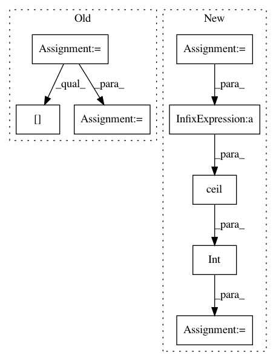

a6236b789b8f4e2e66c8379199f40ecef9afce06,mmdet/core/anchor/anchor_generator.py,AnchorGenerator,valid_flags,#AnchorGenerator#Any#Any#Any#,84
Before Change
valid_x[:valid_w] = 1
valid_y[:valid_h] = 1
valid_xx, valid_yy = self._meshgrid(valid_x, valid_y)
valid = valid_xx & valid_yy
valid = valid[:,
None].expand(valid.size(0),
self.num_base_anchors).contiguous().view(-1)
return valid
After Change
assert self.num_levels == len(featmap_sizes)
multi_level_flags = []
for i in range(self.num_levels):
anchor_stride = self.strides[i]
feat_h, feat_w = featmap_sizes[i]
h, w = pad_shape[:2]
valid_feat_h = min(int(np.ceil(h / anchor_stride)), feat_h)
valid_feat_w = min(int(np.ceil(w / anchor_stride)), feat_w)
flags = self.single_level_valid_flags((feat_h, feat_w),
(valid_feat_h, valid_feat_w),
self.num_base_anchors[i],
device=device)
multi_level_flags.append(flags)
return multi_level_flags
def single_level_valid_flags(self,
In pattern: SUPERPATTERN
Frequency: 3
Non-data size: 8
Instances
Project Name: open-mmlab/mmdetection
Commit Name: a6236b789b8f4e2e66c8379199f40ecef9afce06
Time: 2020-04-21
Author: 40779233+ZwwWayne@users.noreply.github.com
File Name: mmdet/core/anchor/anchor_generator.py
Class Name: AnchorGenerator
Method Name: valid_flags
Project Name: interactiveaudiolab/nussl
Commit Name: 17709aa68cc0ff09f67a90104a0dfd7d0e43174f
Time: 2017-02-02
Author: prem@u.northwestern.edu
File Name: nussl/spectral_utils.py
Class Name:
Method Name: _remove_stft_padding
Project Name: interactiveaudiolab/nussl
Commit Name: 1d557a6f95ba1ab2eeb77e7f9f5ddf18052c200e
Time: 2017-02-04
Author: ethanmanilow@gmail.com
File Name: nussl/spectral_utils.py
Class Name:
Method Name: _remove_stft_padding